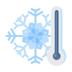
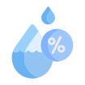

<ion-header>
  <app-holatoolbar title="{{locationobj.locationtypename}} - {{locationobj.name}}" iconName="home-outline"></app-holatoolbar>
</ion-header>
<ion-content class="ion-content-grey">
<ion-grid class="ion-no-padding">
<ion-row>
  <ion-col size="12" sizeMd="3">
    <ion-card color="{{statuscolor}}" class="cardrow1">
      <ion-item class="LargeNormal statusitem" lines="none" color="{{statuscolor}}">
        <ion-label>{{statusmsg}}</ion-label>
        
      </ion-item>
    </ion-card>
  </ion-col>
  <ion-col size="12" sizeMd="3">
    <ion-card color="{{tempcolor}}" class="cardrow1">
      <ion-item class="VLargeNormal statusitem" lines="none" color="{{tempcolor}}">
        <ion-label>{{locationobj.currenttemp}}°C <ion-text class="SmallNormal"><p>Temperature</p></ion-text></ion-label>
        
      </ion-item>
    </ion-card>
  </ion-col>
  <ion-col size="12" sizeMd="3">
    <ion-card color="{{humiditycolor}}" class="cardrow1">
      <ion-item class="VLargeNormal statusitem" lines="none" color="{{humiditycolor}}">
        <ion-label>{{locationobj.currenthumidity}}% <ion-text class="SmallNormal"><p>Humidity</p></ion-text></ion-label>
        
      </ion-item>
    </ion-card>
  </ion-col>
  <ion-col size="12" sizeMd="3">
    <ion-card class="cardrow1">
      <ion-item class="SmallNormal" color="accent" lines="none">
        <ion-label>Sensor Details</ion-label>
        <ion-icon name="hardware-chip-outline" slot="end"></ion-icon>
      </ion-item>
      <ion-item lines="none">
        <ion-label class="sensordetails VSmallNormal">
          <ion-text><p><span class="fieldname">Serial No:</span>&nbsp;XYZ-ABC</p></ion-text>
          <ion-text><p><span class="fieldname">Model:</span>&nbsp;Dummy data</p></ion-text>
          <ion-text><p><span class="fieldname">Last Read:</span>&nbsp;date and time</p></ion-text>
        </ion-label>
      </ion-item>
    </ion-card>
  </ion-col>
  <ion-col size="12" sizeMd="9">
    <ion-card class="cardrow2">
      <ion-img src="../../assets/images/graphsample.png"></ion-img>
    </ion-card>
  </ion-col>
  <ion-col size="12" sizeMd="3">
    <ion-card class="cardrow2">
    <ion-card-content class="ion-no-padding">
      <ion-item lines="none" class="SmallNormal">
        <ion-label class="ion-text-center" color="primary">Air Quality</ion-label>
      </ion-item>
      <ion-item class="VSmallNormal" lines="none">
          <ion-img class="myicon" src="../../assets/icon/co2.png"></ion-img>
          <ion-label *ngIf="(locationobj.currentco2level >= locationobj.co2levelmin) &&  (locationobj.currentco2level <= locationobj.co2levelmax)">&nbsp;CO2 : {{locationobj.currentco2level}} ppm</ion-label>
          <ion-label *ngIf="(locationobj.currentco2level < locationobj.co2levelmin) || (locationobj.currentco2level > locationobj.co2levelmax)" color="danger">&nbsp;CO2 : {{locationobj.currentco2level}} ppm</ion-label>
      </ion-item>
      <ion-item class="VSmallNormal" lines="none">
        <ion-img class="myicon" src="../../assets/icon/pressure.png"></ion-img>
        <ion-label *ngIf="(locationobj.currentbarometricpressure >= locationobj.barometricpressuremin) &&  (locationobj.currentbarometricpressure <= locationobj.barometricpressuremax)">&nbsp;Barometric Pressure : {{locationobj.currentbarometricpressure}} kPa</ion-label>
        <ion-label *ngIf="(locationobj.currentbarometricpressure < locationobj.barometricpressuremin) || (locationobj.currentbarometricpressure > locationobj.barometricpressuremax)" color="danger">&nbsp;Barometric Pressure : {{locationobj.currentbarometricpressure}} kPa</ion-label>
      </ion-item>
      <ion-item class="VSmallNormal" lines="none">
          <ion-img class="myicon" src="../../assets/icon/pm25.png"></ion-img>
          <ion-label *ngIf="(locationobj.currentpm2pt5level >= locationobj.pm2pt5levelmin) &&  (locationobj.currentpm2pt5level <= locationobj.pm2pt5levelmax)">&nbsp;PM2.5 : {{locationobj.currentpm2pt5level}} μg/m3</ion-label>
          <ion-label *ngIf="(locationobj.currentpm2pt5level < locationobj.pm2pt5levelmin) || (locationobj.currentpm2pt5level > locationobj.pm2pt5levelmax)" color="danger">&nbsp;PM2.5 : {{locationobj.currentpm2pt5level}} μg/m3</ion-label>
      </ion-item>
      <ion-item class="VSmallNormal" lines="none">
          <ion-img class="myicon" src="../../assets/icon/pm10.png"></ion-img>
          <ion-label *ngIf="(locationobj.currentpm10level >= locationobj.pm10levelmin) &&  (locationobj.currentpm10level <= locationobj.pm10levelmax)">&nbsp;PM10 : {{locationobj.currentpm10level}} μg/m3</ion-label>
          <ion-label *ngIf="(locationobj.currentpm10level < locationobj.pm10levelmin) || (locationobj.currentpm10level > locationobj.pm10levelmax)" color="danger">&nbsp;PM10 : {{locationobj.currentpm10level}} μg/m3</ion-label>
      </ion-item>
      <ion-item class="VSmallNormal" lines="none">
          <ion-img class="myicon" src="../../assets/icon/tvoc.png"></ion-img>
          <ion-label *ngIf="(locationobj.currenttvoclevel >= locationobj.tvoclevelmin) &&  (locationobj.currenttvoclevel <= locationobj.tvoclevelmax)">&nbsp;TVOC : {{locationobj.currenttvoclevel}} ppb</ion-label>
          <ion-label *ngIf="(locationobj.currenttvoclevel < locationobj.tvoclevelmin) || (locationobj.currenttvoclevel > locationobj.tvoclevelmax)" color="danger">&nbsp;TVOC : {{locationobj.currenttvoclevel}} ppb</ion-label>
      </ion-item>
      <ion-item class="VSmallNormal" lines="none">
          <ion-img class="myicon" src="../../assets/icon/hcho.png"></ion-img>
          <ion-label *ngIf="(locationobj.currenthcholevel >= locationobj.hcholevelmin) &&  (locationobj.currenthcholevel <= locationobj.hcholevelmax)">&nbsp;HCHO : {{locationobj.currenthcholevel}} ppm</ion-label>
          <ion-label *ngIf="(locationobj.currenthcholevel < locationobj.hcholevelmin) || (locationobj.currenthcholevel > locationobj.hcholevelmax)" color="danger">&nbsp;HCHO : {{locationobj.currenthcholevel}} ppm</ion-label>
      </ion-item>
      <ion-item class="VSmallNormal" lines="none">
          <ion-img class="myicon" src="../../assets/icon/o3.png"></ion-img>
          <ion-label *ngIf="(locationobj.currentozonelevel >= locationobj.ozonelevelmin) &&  (locationobj.currentozonelevel <= locationobj.ozonelevelmax)">&nbsp;Ozone : {{locationobj.currentozonelevel}} ppb</ion-label>
          <ion-label *ngIf="(locationobj.currentozonelevel < locationobj.ozonelevelmin) || (locationobj.currentozonelevel > locationobj.ozonelevelmax)" color="danger">&nbsp;Ozone : {{locationobj.currentozonelevel}} ppb</ion-label>
      </ion-item>
      <ion-item class="VSmallNormal" lines="none">
          <ion-img class="myicon" src="../../assets/icon/lux.png"></ion-img>
          <ion-label *ngIf="(locationobj.currentillumination >= locationobj.illuminationmin) &&  (locationobj.currentillumination <= locationobj.illuminationmax)">&nbsp;Light : {{locationobj.currentillumination}} lux</ion-label>
          <ion-label *ngIf="(locationobj.currentillumination < locationobj.illuminationmin) || (locationobj.currentillumination > locationobj.illuminationmax)" color="danger">&nbsp;Light : {{locationobj.currentillumination}} lux</ion-label>
      </ion-item>
      <ion-item class="VSmallNormal" lines="none">
          <ion-img class="myicon" src="../../assets/icon/sound.png"></ion-img>
          <ion-label *ngIf="(locationobj.currentsound >= locationobj.soundmin) &&  (locationobj.currentsound <= locationobj.soundmax)">&nbsp;Sound : {{locationobj.currentsound}} dB</ion-label>
          <ion-label *ngIf="(locationobj.currentsound < locationobj.soundmin) || (locationobj.currentsound > locationobj.soundmax)" color="danger">&nbsp;Sound : {{locationobj.currentsound}} dB</ion-label>
      </ion-item>
     </ion-card-content>
    </ion-card>
  </ion-col>
  </ion-row>
  </ion-grid>
  <ion-fab vertical="bottom" horizontal="end" slot="fixed">
    <ion-fab-button (click)="editLocation()">
      <ion-icon name="create-outline"></ion-icon>
    </ion-fab-button>
  </ion-fab>
</ion-content>
